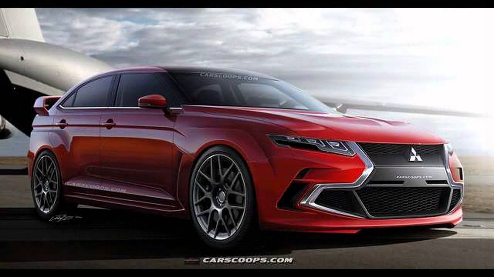
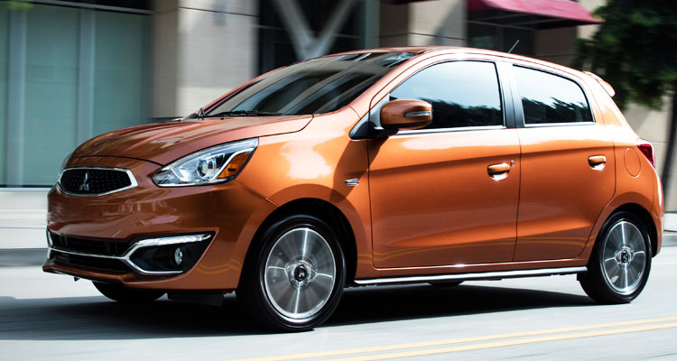

Mitsubishi-Lancer
With an inexpensive interior and less-than-thrilling driving chops, the Lancer leaves much to be desired. The standard 148-hp four-cylinder pairs with front-wheel drive and a five-speed manual or optional CVT. A 168-hp four with all-wheel drive is optional. The base ES is bare bones but wallet-friendly. The SE offers heated seats; the SEL adds leather and rain-sensing wipers. All models get a standard rearview camera. Despite recent tweaks, the Lancer still trails its more modern competition.

Mitsubishi-mirage
This basic four-door hatchback comes with a good warranty and a maximum fuel-economy rating of 43 mpg highway. The lightweight Mirage is maneuverable, easy to throw around, and its controls are effortless. The five-speed manual helps wring what power there is from the 78-hp three-cylinder, but the fuel-saving CVT is better for traffic. Apple CarPlay and Android Auto are optional. Like fast food, it’s inexpensive, doesn’t pretend to be something it isn’t, and gets the job done.

Mitsubishi Montero
The 3rd generation Montero Sport has a totally redesigned front fascia showcasing Mitsubishi's 'Dynamic Shield' grille which is the benchmark of their future models. It's embezzled with chrome linings that surrounds the huge air intakes and extends up to the fog lamps; complemented by sleek LED head and tail lights. Inside, seats for the top-of-the-line variants are wrapped in leather with added sportier trims for the GT variant. A 6.75-inch screen serves as the entertainment for its driver and passengers.

Mitsubishi Pajero
The Pajero is available in either gas or diesel engine. The gas engine is a 3.8L V6 with 248 hp and 329 Nm of torque. The diesel variant is also a V6 engine that roars 163 hp with 363 Nm of torque. Both are attached to a 5-speed automatic transmission with Supertronic and Superselect 4WD. Other standards include airbags, ABS with electronic brake distribution, immobilizer, alarm, and rear parking sensors.